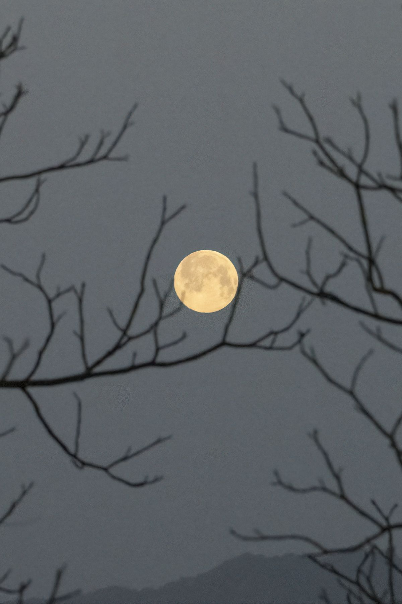
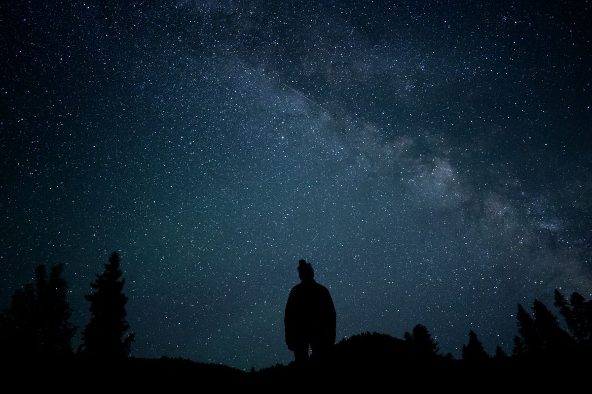
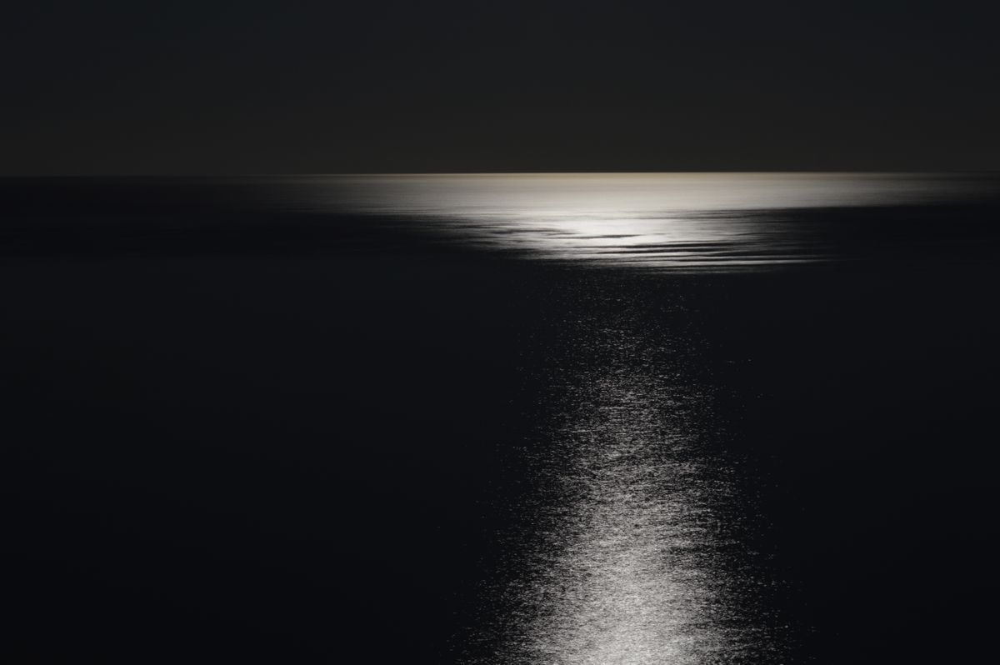

Senin malam, 26 Oktober 2026, jangan lupa menengadah. Langit Indonesia akan dihiasi Hunter's Moon, sebutan tradisional untuk bulan purnama bulan Oktober. BMKG mengajak masyarakat menyaksikannya, dan kabar baiknya kamu tidak butuh teleskop atau kacamata khusus. Matamu saja sudah cukup.
Artikel ini merangkum apa itu Hunter's Moon, jam berapa waktu terbaik melihatnya, dan satu peringatan penting buat kamu yang tinggal di pesisir. Semua jadwal dan penjelasan di sini mengikuti keterangan resmi BMKG per Oktober 2026.

Apa itu Hunter's Moon
Hunter's Moon artinya Bulan Pemburu. Ini sebutan tradisional untuk bulan purnama yang muncul setelah Harvest Moon (Bulan Panen), biasanya di bulan Oktober. Namanya berasal dari tradisi kalender masyarakat pribumi Amerika, khususnya suku Algonquian, dan para pemukim awal Eropa.
Ceritanya begini. Setelah masa panen usai, ladang-ladang jadi terbuka sehingga hewan seperti rusa dan rubah keluar mencari sisa-sisa panen. Terang bulan purnama membantu para pemburu melacak buruan di malam hari, sekaligus mengumpulkan persediaan daging sebelum musim dingin tiba. Jadi namanya bukan soal warna atau ukuran bulannya, melainkan soal tradisi dan waktu kemunculannya.
BMKG menegaskan, secara fisik Hunter's Moon tidak ada bedanya dengan bulan purnama biasa. Keunikannya murni latar budaya dan sejarahnya. Ada satu catatan menarik dari BMKG: setiap tiga tahun sekali, ketika Harvest Moon jatuh di awal Oktober, Hunter's Moon bergeser ke bulan November. Tahun ini ia jatuh pas di Oktober. Di tradisi lain, purnama bulan Oktober juga punya nama seperti Migrating Moon atau Ice Moon, yang sama-sama menandai peralihan musim di belahan bumi utara.
Kapan waktu terbaik menyaksikannya
Untuk wilayah Jakarta, BMKG memberi jadwal yang cukup detail. Bulan terbit dari arah timur pukul 17.53 WIB, mencapai posisi tertinggi pukul 23.58 WIB, dan terbenam pukul 05.10 WIB keesokan harinya.
Menurut BMKG, waktu terbaik untuk mengamatinya adalah mulai pukul 20.00 WIB. Saat baru terbit, posisi bulan masih rendah dekat garis horizon dan gampang terhalang gedung-gedung tinggi, jadi sabar sebentar sampai ia naik lebih tinggi di langit.
Pengamatan aman dilakukan dengan mata telanjang, tanpa pelindung khusus. Kalau mau pengalaman yang lebih bagus, cari tempat terbuka yang menghadap ke timur dan jauh dari lampu kota. Bulan yang baru naik dari ufuk biasanya terlihat lebih besar dari biasanya. Itu cuma efek ilusi optik karena ada objek pembanding seperti gedung atau pohon di depannya, bukan karena bulannya membesar beneran. Justru di momen inilah foto bulan paling cantik diambil.

Lima tips biar pengamatanmu maksimal
Kamu tidak perlu peralatan khusus, tapi lima hal sederhana ini bikin pengalamanmu jauh lebih berkesan:
- Cek langit dulu sebelum keluar. Sebagus apa pun momennya, pengamatan tetap bergantung pada awan dan hujan di wilayahmu. Pantau prakiraan cuaca harian BMKG sore harinya.
- Pilih titik yang menghadap timur. Bulan terbit dari arah timur, jadi cari tempat terbuka dengan pandangan lapang ke arah itu, jauh dari lampu jalan yang terang.
- Datang lebih awal dan jangan buru-buru. Biarkan matamu beradaptasi dengan gelap beberapa menit supaya detail langit malam terlihat lebih jelas.
- Jauhkan layar HP dari wajah saat mengamati. Cahaya layar yang terang bikin mata butuh waktu lagi buat kembali beradaptasi dengan gelap.
- Buat yang mau memotret, pakai mode malam di kamera HP, sandarkan HP di permukaan yang stabil atau tripod kecil, dan hindari zoom digital berlebihan supaya hasil fotonya tidak pecah.

Warga pesisir wajib waspada banjir rob
Ada satu peringatan yang jangan disepelekan. Saat purnama, posisi Matahari, Bumi, dan Bulan berada hampir segaris lurus. Posisi ini memperkuat tarikan gravitasi gabungan yang memengaruhi pasang surut air laut, sehingga air pasang jadi lebih tinggi dan surut lebih rendah dari biasanya. Fenomena ini disebut pasang purnama.
BMKG mengimbau masyarakat di kawasan pesisir untuk mewaspadai potensi kenaikan muka air laut alias banjir rob, dan mengikuti informasi serta peringatan resmi di wilayah masing-masing. Jadi kalau kamu tinggal di daerah pantai, nikmati pemandangan bulannya sambil tetap memantau info cuaca maritim terbaru dari kanal resmi BMKG.
Intinya
Hunter's Moon 26 Oktober 2026 adalah bulan purnama biasa yang istimewa karena nama dan tradisinya. Catat jamnya: mulai melongok dari timur pukul 17.53 WIB, paling enak ditonton mulai pukul 20.00 WIB, dan mencapai puncak pukul 23.58 WIB. Tidak perlu alat apa pun, cukup langit yang cerah dan tempat yang gelap menghadap timur. Buat warga pesisir, waspadai pasang yang lebih tinggi dari biasanya. Semua jadwal di artikel ini mengikuti keterangan BMKG per Oktober 2026.
← Kembali ke Other